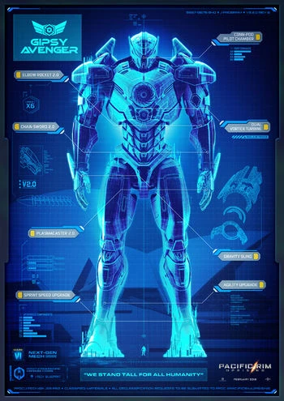
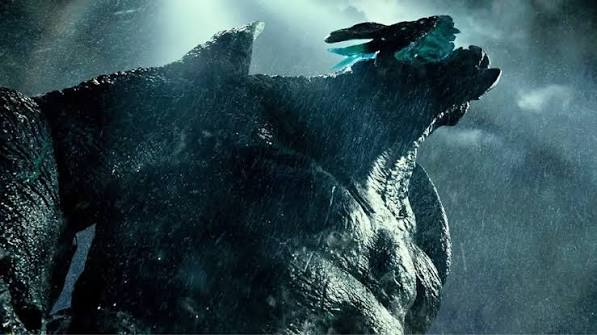

Bienvenido
Titanes del Pacífico (Pacific Rim) es una película de ciencia ficción dirigida por Guillermo del Toro. La historia muestra enormes robots llamados Jaegers enfrentándose a monstruos gigantes conocidos como Kaijus para salvar a la humanidad.
Jaegers

Los Jaegers son robots gigantes controlados por dos pilotos mediante una conexión neuronal cabe recalcar que la sincronizacion entre ambos pilotos es crucial. Fueron creados para combatir a los Kaijus.
Kaijus

Los Kaijus son enormes criaturas que emergen del océano para destruir ciudades y amenazar a la humanidad, estos son creados por una raza alienígena conocida como los "Precursores" con el objetivo de conquistar la Tierra.
Gipsy Danger
Es uno de los Jaegers más poderosos y el protagonista de la película Fue pilotado por Raleigh Becket y Mako Mori, sin embargo antes de eso fue pilotado por Raleigh Becket y Yancy Becket, quienes fueron los primeros en pilotarlo.